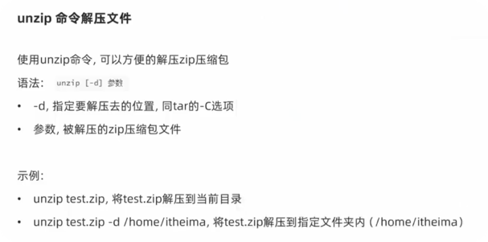

Linux常用操作
软件安装
- CentOS系统使用：
- yum [install remove search] [-y] 软件名称
- install 安装
- remove 卸载
- search 搜索
- -y，自动确认
- Ubuntu系统使用
- apt [install remove search] [-y] 软件名称
- install 安装
- remove 卸载
- search 搜索
- -y，自动确认
yum 和 apt 均需要root权限
systemctl
功能：控制系统服务的启动关闭等
语法：systemctl start | stop | restart | disable | enable | status 服务名
- start，启动
- stop，停止
- status，查看状态
- disable，关闭开机自启
- enable，开启开机自启
- restart，重启
软链接
功能：创建文件、文件夹软链接（快捷方式）
语法：ln -s 参数1 参数2
- 参数1：被链接的
- 参数2：要链接去的地方（快捷方式的名称和存放位置）
日期
语法：date [-d] [+格式化字符串]
-
-d 按照给定的字符串显示日期，一般用于日期计算
-
格式化字符串：通过特定的字符串标记，来控制显示的日期格式
- %Y 年%y 年份后两位数字 (00..99)
- %m 月份 (01..12)
- %d 日 (01..31)
- %H 小时 (00..23)
- %M 分钟 (00..59)
- %S 秒 (00..60)
- %s 自 1970-01-01 00:00:00 UTC 到现在的秒数
示例：
- 按照2022-01-01的格式显示日期

- 按照2022-01-01 10:00:00的格式显示日期

- -d选项日期计算

-
支持的时间标记为：

时区
修改时区为中国时区

ntp
功能：同步时间
安装：yum install -y ntp
启动管理：systemctl start | stop | restart | status | disable | enable ntpd
通过阿里云的时间校准服务器手动校准时间：ntpdate -u ntp.aliyun.com
ip地址
格式：a.b.c.d
- abcd为0~255的数字
特殊IP：
- 127.0.0.1，表示本机
- 0.0.0.0
- 可以表示本机
- 也可以表示任意IP（看使用场景），放行ip设置为0.0.0.0，表示允许任意ip
查看ip：ifconfig
主机名
功能：Linux系统的名称
查看：hostname
设置：hostnamectl set-hostname 主机名
百度网站的ip地址可以被解析为www.baidu.com这个域名
配置Vmware固定IP
1. 修改Vmware网络，参阅PPT，图太多
- 设置Linux内部固定IP
修改文件：/etc/sysconfig/network-scripts/ifcfg-ens33
示例文件内容：
TYPE="Ethernet"
PROXY_METHOD="none"
BROWSER_ONLY="no"
BOOTPROTO="static" # 改为static，固定IP
DEFROUTE="yes"
IPV4_FAILURE_FATAL="no"
IPV6INIT="yes"
IPV6_AUTOCONF="yes"
IPV6_DEFROUTE="yes"
IPV6_FAILURE_FATAL="no"
IPV6_ADDR_GEN_MODE="stable-privacy"
NAME="ens33"
UUID="1b0011cb-0d2e-4eaa-8a11-af7d50ebc876"
DEVICE="ens33"
ONBOOT="yes"
IPADDR="192.168.88.131" # IP地址，自己设置，要匹配网络范围
NETMASK="255.255.255.0" # 子网掩码，固定写法255.255.255.0
GATEWAY="192.168.88.2" # 网关，要和VMware中配置的一致
DNS1="192.168.88.2" # DNS1服务器，和网关一致即可
ps命令
功能：查看进程信息
语法：ps -ef，查看全部进程信息，可以搭配grep做过滤：ps -ef | grep xxx
kill命令

nmap命令

netstat命令
功能：查看端口占用
用法：netstat -anp | grep xxx xxx代表要查看的端口
nmap命令也可以查看端口, e.g. nmap 127.0.0.1 查看本机占用端口
ping命令
测试网络是否联通
语法：ping [-c num] 参数

wget命令

curl命令


top命令
功能：查看主机运行状态
语法：top，查看基础信息
负载为1可以理解为有一颗cpu很繁忙
可用选项：

交互式模式中，可用快捷键：

df命令
查看磁盘占用

iostat命令
查看CPU、磁盘的相关信息


sar命令
查看网络统计

环境变量
- export 用于添加环境变量
- 临时设置：export 变量名=变量值
- 永久设置：
- 针对用户，设置用户HOME目录内：~/.bashrc文件(bash) 或~/.zshrc文件(zsh)
- 针对全局，设置/etc/profile
* 在文件中添加 export 变量名=变量值
* 输入命令source 修改的路径名称让修改生效
- 查看环境变量: echo $env_var_name
PATH变量
-
PATH是一个特殊且非常重要的环境变量。它定义了系统在执行命令时搜索可执行文件的目录列表。
-
可以将自定义路径加入PATH内，实现自定义命令在任意地方均可执行的效果。
-
如果export PATH="~./bin:$PATH"，那么在~./bin目录下的所有可执行文件，都可以在zsh终端运行时被系统查找到
- 例如，将python添加到可执行程序的搜索路径: export PATH="/Users/wenglongao/anaconda3/envs/torch/bin/python:$PATH"
- 注意两种export的写法的区别
$符号
可以取出指定的环境变量的值
语法：$变量名
示例：
echo $PATH，输出PATH环境变量的值
echo ${PATH}ABC，输出PATH环境变量的值以及ABC
如果变量名和其它内容混淆在一起，可以使用${}
压缩解压
压缩
tar -zcvf 压缩包 被压缩1 被压缩2 ... 被压缩N
* .tar格式：tar -cvf，体积不会变小
* .tar.gz格式：tar -zcvf，体积变小明显
- -z表示使用gzip，可以不写
zip [-r] 参数1 参数2 参数N

解压
tar -zxvf 被解压的文件 -C 要解压去的地方
- -z表示使用gzip，可以省略
- -C，可以省略，指定要解压去的地方，不写解压到当前目录
unzip

总结
上传、下载
- 通过final shell直接拖拽
* 通过rz、sz命令
unzip [-d] 参数

su命令
切换用户
语法：su [-] [用户]

sudo命令

比如：
在visudo内配置如上内容，可以让itheima用户，无需密码直接使用sudo
chmod命令
修改文件、文件夹权限
语法：chmod [-R] 权限 参数
- 权限，要设置的权限，比如755，表示：
rwxr-xr-x

-
参数，被修改的文件、文件夹
-
选项-R，设置文件夹和其内部全部内容一样生效
chown命令
修改文件、文件夹所属用户、组
语法：chown [-R] [用户][:][用户组] 文件或文件夹

用户组管理

用户管理

genenv命令
getenv group，查看系统全部的用户组

getenv passwd，查看系统全部的用户

env命令
查看系统全部的环境变量
语法：env